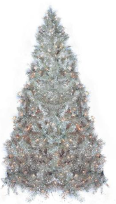

13' Silver Tinsel Pine Artificial Christmas Twig Tree - Unlit - 32913323. If you're looking to switch things up this holiday season with a fun and quirky look, this is the tree for you. Easily displayed on a table top out of reach from pets and small children, this is a perfect tree to showcase collectible and precious Christmas ornaments. Great on its own as a miniature Christmas tree or as an addition to your existing decor, this tinsel twig tree will be a wonderful complement to your holiday display.
Dimensions: 3' high (from the base of the stand to the top of the tree)
19” base diameter (at the widest point)
Material(s): tinsel/metal/wire